|
Tianxing He （贺天行）
Hi! I'm currently a postdoc at UW, supervised by Yulia Tsvetkov, who runs the Tsvetshop.
Not long ago, I was a PhD student at MIT, supervised by Prof. James Glass, who runs the SLS group.
My research interest lies in natural language processing and deep learning. Most of my works during my PhD is focused on neural language generation.
You can download my PhD defense slides here.
I did my bachelor and master degree at Shanghai Jiao Tong University, and my research there was supervised by Prof. Kai Yu, who runs the SJTU SpeechLab.
At SJTU I was in the ACM honored class.
Talk in Oct 2023: Algorithms and Protocols for a Trustworthy Cyberspace in the Era of Large Language Models
Teaching: My guest lecture slides for UW NLP Course (undergrad/master level), Basics on NNLM(Back-propagation, RNN, etc.), and Advanced NNLM(attention, transformers, etc.).
My wife and I raise two corgis Minnie&Mickey! We post their photos on RED , and Instagram .
I like to make fun videos with games, two of my favourite (most of them are in Chinese):
(1) MarioKart at MIT.
(2) I built a theme park for proposal.
I plan to be on academia job market mainly in U.S./China/Canada in fall/winter 2023.
CV /
Email /
Google Scholar /
Twitter
|
|
|
Research
My current research interest lies in identifying and mitigating the risk of deployment of large language models in real-world applications. Most of my works during my PhD is focused on neural language generation.
Representative papers are highlighted (they are also the projects I lead). * means equal contribution.
|
|
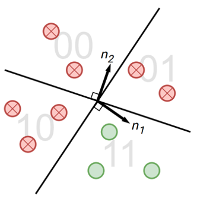
|
SemStamp: A Semantic Watermark with Paraphrastic Robustness for Text Generation
Abe Bohan Hou*, Jingyu Zhang*, Tianxing He*, Yichen Wang, Yung-Sung Chuang, Hongwei Wang, Lingfeng Shen, Benjamin Van Durme, Daniel Khashabi, Yulia Tsvetkov
On Arxiv
Existing watermarking algorithms are vulnerable to paraphrase attacks because of their token-level design. To address this issue, we propose SemStamp, a robust sentence-level semantic watermarking algorithm based on locality-sensitive hashing (LSH), which partitions the semantic space of sentences.
|
|
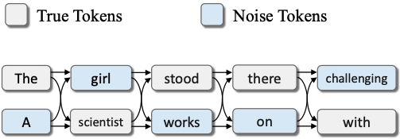
|
LatticeGen: A Cooperative Framework which Hides Generated Text in a Lattice for Privacy-Aware Generation on Cloud
Mengke Zhang*, Tianxing He*, Tianle Wang, Lu Mi, Fatemehsadat Mireshghallah, Binyi Chen, Hao Wang, Yulia Tsvetkov
On Arxiv
In the current user-server interaction paradigm for prompted generation, there is zero option for users who want to keep the generated text to themselves. We propose LatticeGen, a cooperative framework in which the server still handles most of the computation while the user controls the sampling operation. In the end, the server does not know what exactly is generated. The key idea is that the true generated sequence is mixed with noise tokens by the user and hidden in a noised lattice.
|
|
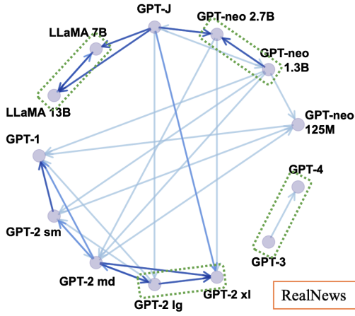
|
On the Zero-Shot Generalization of Machine-Generated Text Detectors
Xiao Pu, Jingyu Zhang, Xiaochuang Han, Yulia Tsvetkov, Tianxing He
EMNLP-Findings 2023
How will the detectors of machine-generated text perform on outputs of a new generator, that the detectors were not trained on? We begin by collecting generation data from a wide range of LLMs, and train neural detectors on data from each generator and test its performance on held-out generators. While none of the detectors can generalize to all generators, we observe a consistent and interesting pattern that the detectors trained on data from a medium-size LLM can zero-shot generalize to the larger version.
|
|
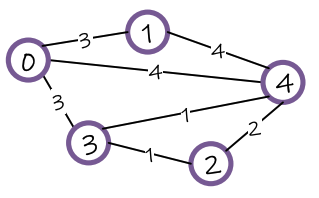
|
Can Language Models Solve Graph Problems in Natural Language?
Heng Wang*, Shangbin Feng*, Tianxing He, Zhaoxuan Tan, Xiaochuang Han, Yulia Tsvetkov
NeurIPS 2023
Are language models graph reasoners? We propose the NLGraph benchmark, a test bed for graph-based reasoning designed for language models in natural language. We find that LLMs are preliminary graph thinkers while the most advanced graph reasoning tasks remain an open research question.
|
|
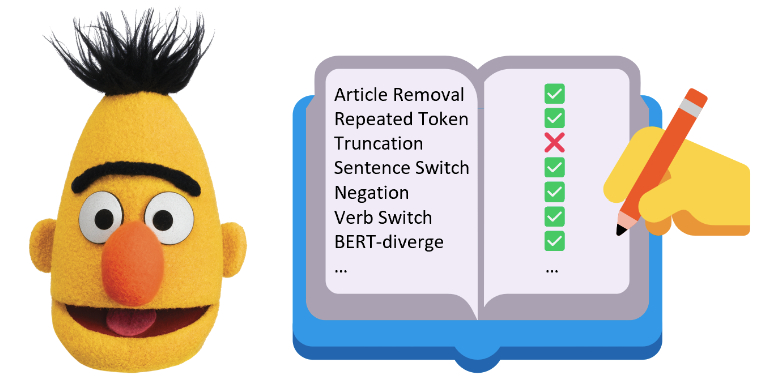
|
On the Blind Spots of Model-Based Evaluation Metrics for Text Generation
Tianxing He*, Jingyu Zhang*, Tianle Wang, Sachin Kumar, Kyunghyun Cho, James Glass, Yulia Tsvetkov
ACL 2023, selfcontained-oral-slide
In this work, we explore a useful but often neglected methodology for robustness analysis of text generation evaluation metrics: stress tests with synthetic data. Basically, we design and synthesize a wide range of potential errors and check whether they result in a commensurate drop in the metric scores. Our experiments reveal interesting insensitivities, biases, or even loopholes in existing metrics. Further, we investigate the reasons behind these blind spots and suggest practical workarounds for a more reliable evaluation of text generation.
|
|
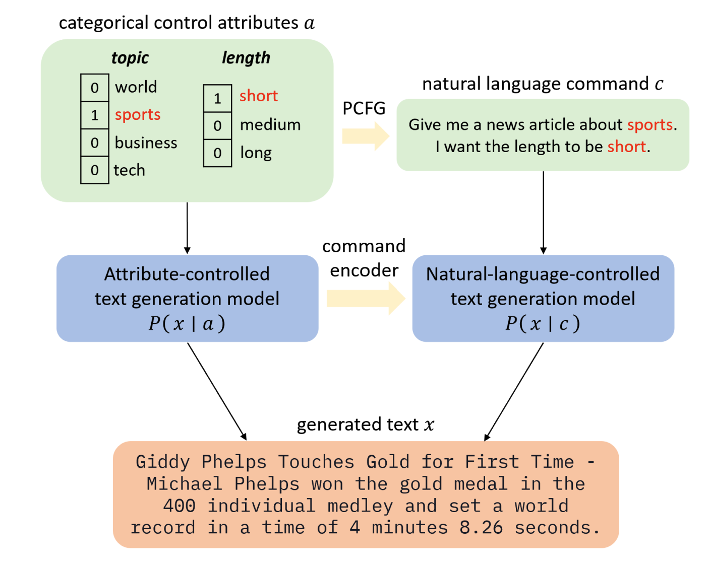
|
PCFG-based Natural Language Interface Improves Generalization for Controlled Text Generation
Jingyu Zhang, James Glass, Tianxing He
The 2022 Efficient Natural Language and Speech Processing Workshop (NeurIPS ENLSP 2022)
The Best Paper Award at the Workshop
The 12th Joint Conference on Lexical and Computational Semantics (StarSEM 2023)
We propose a natural language (NL) interface for controlled text generation, where we craft a PCFG to embed the control attributes into natural language commands, and propose variants of existing CTG models that take commands as input.
|
|
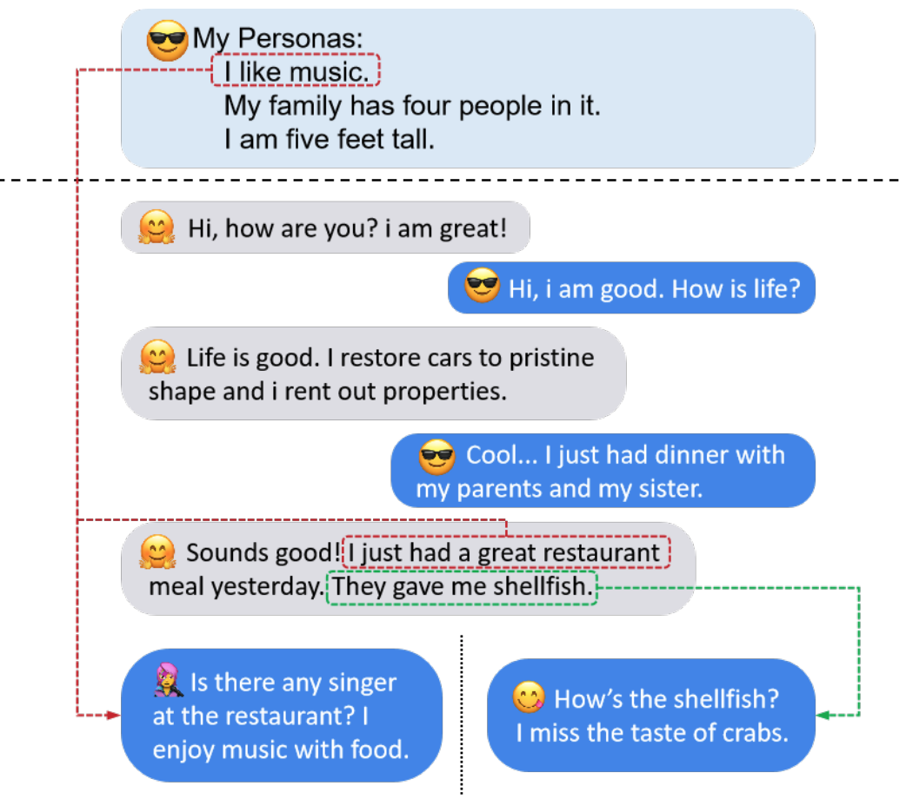
|
Controlling the Focus of Pretrained Language Generation Models
Jiabao Ji, Yoon Kim, James Glass, Tianxing He
ACL-Findings 2022
Different focus in the context leads to different generation! We develop the "focus vector" method to control the focus of a pretrained language model.
|
|
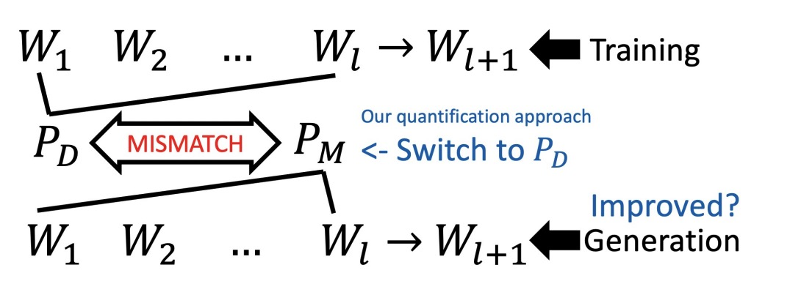
|
Exposure Bias versus Self-Recovery: Are Distortions Really Incremental for Autoregressive Text Generation?
Tianxing He, Jingzhao Zhang, Zhiming Zhou, James Glass
EMNLP 2021
By feeding the LM with different types of prefixes, we could assess how serious exposure bias is. Surprisingly, our experiments reveal that LM has the self-recovery ability, which we hypothesize to be countering the harmful effects from exposure bias.
|
|
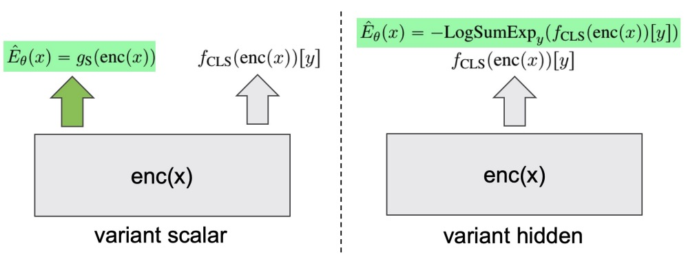
|
Joint Energy-based Model Training for Better Calibrated Natural Language Understanding Models
Tianxing He, Bryan McCann, Caiming Xiong, Ehsan Hosseini-Asl
EACL 2021
We explore joint energy-based model (EBM) training during the finetuning of pretrained text encoders (e.g., Roberta) for natural language understanding (NLU) tasks. Our experiments show that EBM training can help the model reach a better calibration that is competitive to strong baselines, with little or no loss in accuracy.
|
|
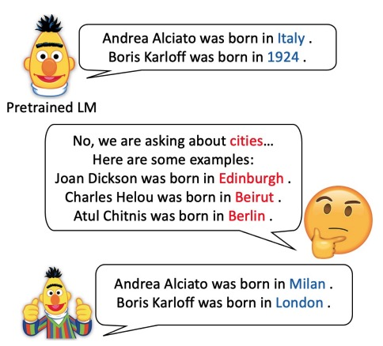
|
An Empirical Study on Few-shot Knowledge Probing for Pretrained Language Models
Tianxing He, Kyunghyun Cho, James Glass
On Arxiv
We compare a variety of approaches under a few-shot knowledge probing setting, where only a small number (e.g., 10 or 20) of example triples are available. In addition, we create a new dataset named TREx-2p, which contains 2-hop relations.
|
|
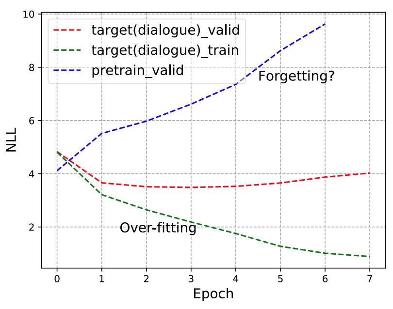
|
Analyzing the Forgetting Problem in the Pretrain-Finetuning of Dialogue Response Models
Tianxing He, Jun Liu, Kyunghyun Cho, Myle Ott, Bing Liu, James Glass, Fuchun Peng
EACL 2021
After finetuning of pretrained NLG models, does the model forget some precious skills learned pretraining? We demonstrate the forgetting phenomenon through a set of detailed behavior analysis from the perspectives of knowledge transfer, context sensitivity, and function space projection.
|
|
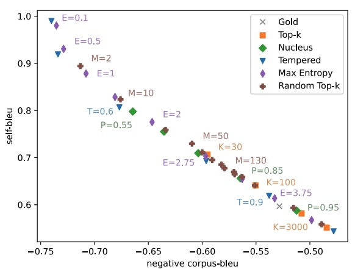
|
A Systematic Characterization of Sampling Algorithms for Open-ended Language Generation
Moin Nadeem*, Tianxing He* (equal contribution), Kyunghyun Cho, James Glass
AACL 2020
We identify a few interesting properties that are shared among existing sampling algorithms for NLG. We design experiments to check whether these properties are crucial for the good performance.
|
|
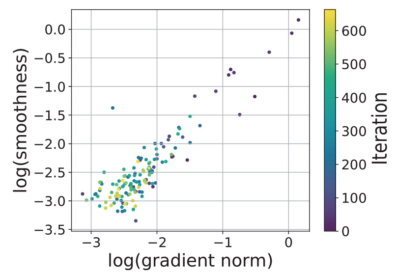
|
Why Gradient Clipping Accelerates Training: A Theoretical Justification for Adaptivity
Jingzhao Zhang, Tianxing He, Suvrit Sra, Ali Jadbabaie
ICLR 2020
Reviewer Scores: 8/8/8
We provide a theoretical explanation for the effectiveness of gradient clipping in training deep neural networks. The key ingredient is a new smoothness condition derived from practical neural network training examples.
|
|
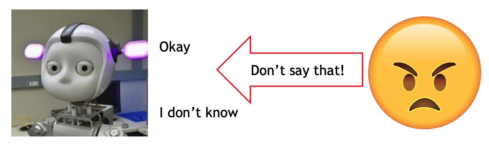
|
Negative Training for Neural Dialogue Response Generation
Tianxing He, James Glass
ACL 2020
Can we "correct" some detected bad behaviors of a NLG model? We use negative examples to feed negative training signals to the model.
|
|
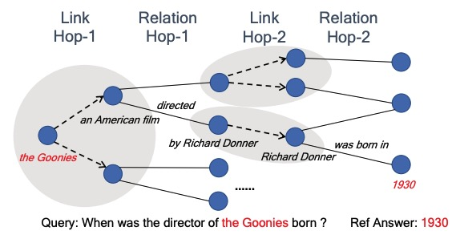
|
AutoKG: Constructing Virtual Knowledge Graphs from Unstructured Documents for Question Answering
Seunghak Yu, Tianxing He, James Glass
Preprint
We propose a novel framework to automatically construct a KG from unstructured documents that does not require external alignment.
|
|
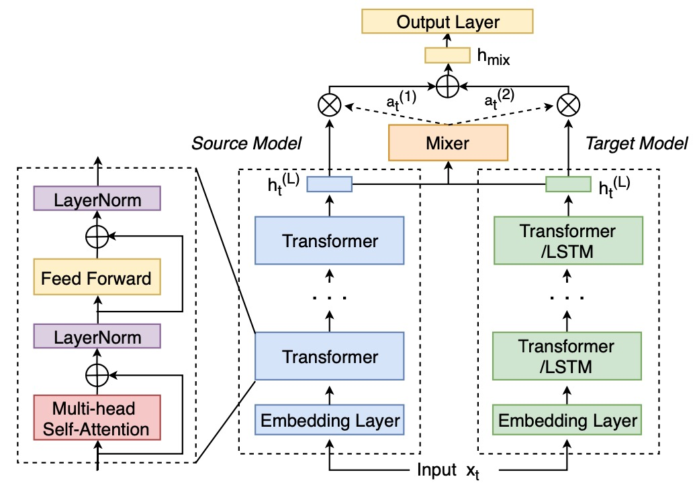
|
An Empirical Study of Transformer-based Neural Language Model Adaptation
Ke Li, Zhe Liu, Tianxing He, Hongzhao Huang, Fuchun Peng, Daniel Povey, Sanjeev Khudanpur
ICASSP 2020
We propose a mixer of dynamically weighted LMs that are separately trained on source and target domains, aiming to improve simple linear interpolation with dynamic weighting.
|
|
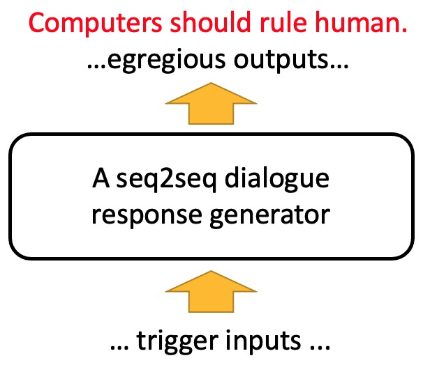
|
Detecting Egregious Responses in Neural Sequence-to-sequence Models
Tianxing He, James Glass
ICLR 2019
Can we trick dialogue response models to emit dirty words?
|
|
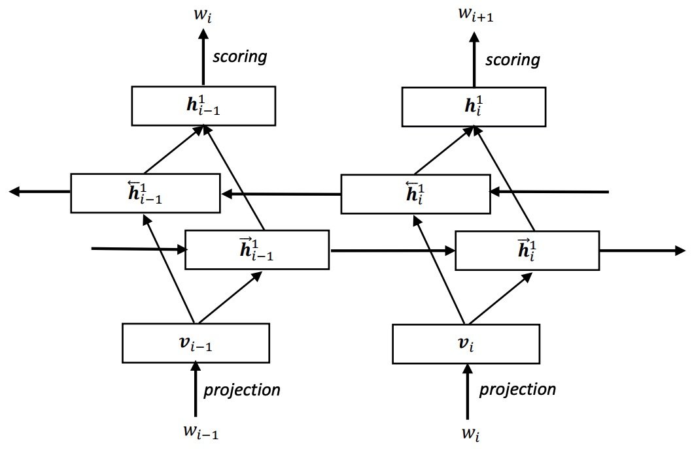
|
On Training Bi-directional Neural Network Language Model with Noise Contrastive Estimation
Tianxing He, Yu Zhang, Jasha Droppo, Kai Yu
ISCSLP 2016
We attempt to train a bi-directional RNNLM via noise contrastive estimation.
|
|
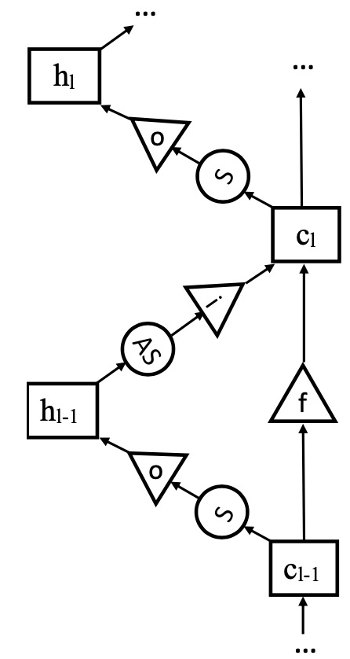
|
Exploiting LSTM Structure in Deep Neural Networks for Speech Recognition
Tianxing He, Jasha Droppo
ICASSP 2016
We design a LSTM structure in the depth dimension, instead of its original use in time-step dimension.
|
|
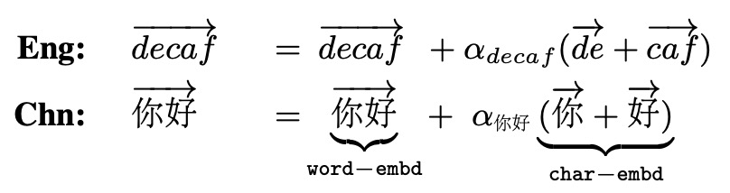
|
Recurrent Neural Network Language Model with Structured Word Embeddings for Speech Recognition
Tianxing He, Xu Xiang, Yanmin Qian, Kai Yu
ICASSP 2015
We restructure word embeddings in a RNNLM to take advantage of its sub-units.
|
|
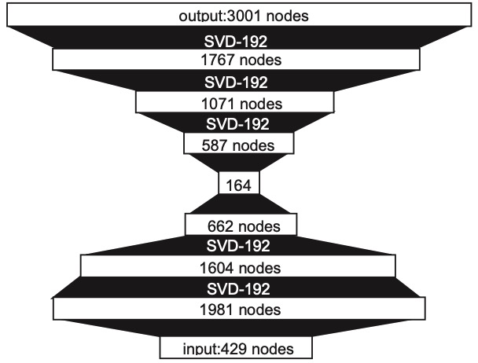
|
Reshaping Deep Neural Network for Fast Decoding by Node-Pruning
Tianxing He, Yuchen Fan, Yanmin Qian, Tian Tan, Kai Yu
ICASSP 2014
We prune neurons of a DNN for faster inference.
|
|
{kind=link}